罗兰 对你的了解加深了 new
你没有追问那封没有寄出的信，只把窗边的位置留给了他。他终于不再追问你的来处
你让那段沉默有了回声
对角色的影响 8

世界回响 3第12天
你 对任轻义产生了影响
他第一次在牌局结束前收起了筹码，答应替你保守那个秘密。第11天
你 对世界产生了影响 ⌄
茶室里多出一只空杯。后来每个雪夜，都有人把它重新斟满。施塔恩 对你的了解加深了
他记住了你望向隘口时的神情，也没有拆穿你故作轻松的玩笑。